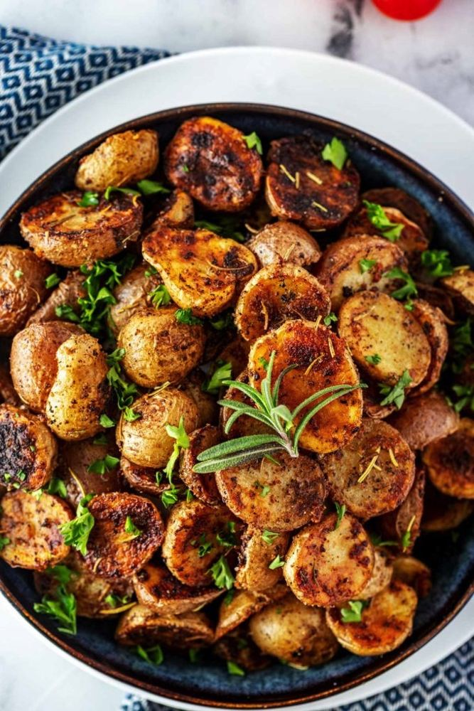

1.5 pounds yukon mini gold potatoes
2 tablespoons avocado oil
1 teaspoon garlic powder
1 teaspoon dried rosemary
1 teaspoon sea salt
1/2 teaspoon fresh ground black pepper
1 green pepper
1 yellow onion
1 red pepper
Some bacon
Green Beans
1 lb Fresh Green Beans washed and trimmed
1 Tbsp Avocado Oil
1/2 tsp Garlic Salt
1/4 tsp Pepper
2 lbs of chicken
2 lbs of steak
sharp cheddar shredded cheese
Heat the grill and cook the potatoes at 350 degrees.
Potatoes
Cut potatoes to less than 1 inch in size.
Place the potatoes in a large bowl and toss with avocado oil, garlic powder, rosemary, salt, and pepper.
Oil the griddle well.
Add the potatoes and cook, stirring occasionally, for 20 minutes. Baste with sprinkles of water to cook better/faster.
Cook veggies and bacon right before. Combine.
Add shredded cheese. Baste until melted. Combined as you take it off.
Green Beans
Spread the oil onto the griddle with your spatula. Put the green beans onto the griddle on the oil in a single layer. Season them with the garlic salt and pepper.
Sauté the green beans for 7-10 minutes until the green beans are cooked through. Stir frequently to prevent the green beans from burning but you do want a little bit of char on them as it gives the green beans tons of flavor.